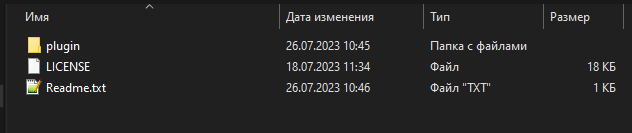
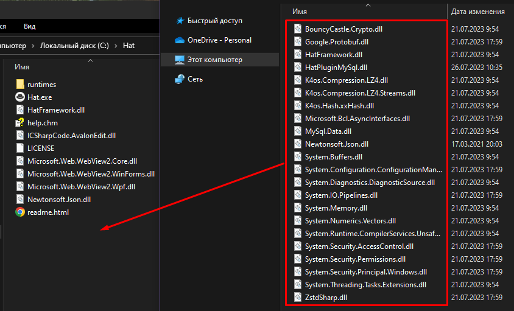
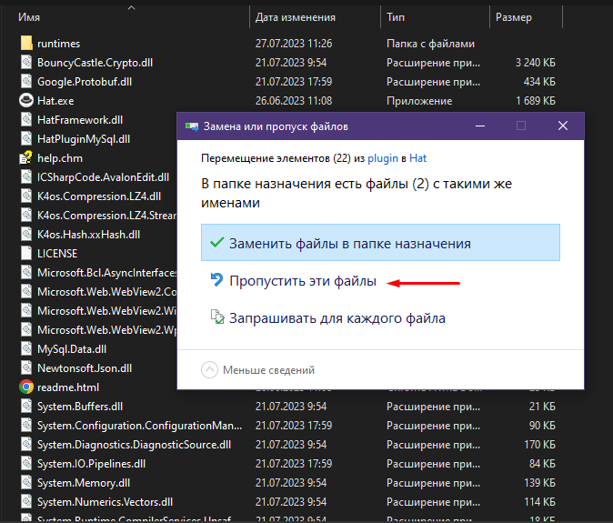
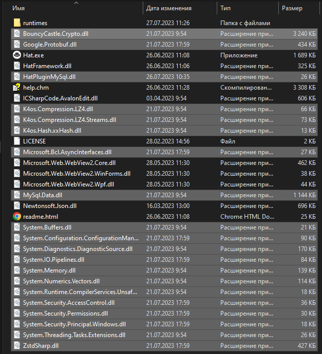

Установка плагина HatPluginMySql
1. Скачайте и установите браузер Hat
ссылка: https://github.com/SomovStudio/Hat/releases
2. Скачайте плагин HatPluginMySql
ссылка: https://github.com/SomovStudio/HatPluginMySql/releases
3. Распакуйте архив HatPluginMySql-1.0.0.zip

4. Скопируйте собержимое папки plugin в корень папки браузера Hat

При копировании вас могут спросить о замене существующих файлов.
В этом случае рекомендуется выбрать "Пропустить эти файлы".

В результате в корне папки должны быть следующие файлы

На этом установка плагина завершена!
Created with the Personal Edition of HelpNDoc: What is a Help Authoring tool?